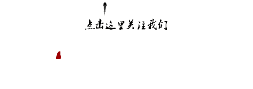

收录于合集

简 介
**
**
作者简介：
乔恩•埃尔斯特，1972年在巴黎第五大学获得博士学位，导师为雷蒙•阿隆；先后任教于奥斯陆大学历史学系、芝加哥大学哲学与政治科学系、哥伦比亚大学政治学系，同时兼任法兰西学院教授；1997年，由于对人类心灵活动的卓越研究被授予“简•尼科德奖”(Jean Nicod Prize)；现为哥伦比亚大学政治学系罗伯特•默顿教授，主要从事分析马克思主义、理性选择、情感理论、社会科学哲学、制度变迁和宪法设计等研究，代表性著作有《理解马克思》《尤利西斯与塞壬》《技术变迁的解释》《社会黏合剂：社会秩序的研究》《心灵的炼金术：理性与情感》等。
郭忠华，2001年在厦门大学获政治学硕士学位，2004年在复旦大学获政治学博士学位，现为中山大学政治与公共事务管理学院教授、博士生导师，中国行政管理研究中心研究员，主要从事公民身份、国家理论、西方政治思想、当代中国政治研究，代表性著作有《解放政治的反思与未来：吉登斯现代性思想研究》《现代性理论脉络中的社会与政治：吉登斯思想地形图》《变动社会中的公民身份：对吉登斯、基恩等人的访谈》《公民身份的核心问题》，主编有《公民身份研究》(第一、二、三卷)《当代国家理论：基础与前沿》等。
**
**
文章来源 ： 《南国学术》2014年第1期第23—30页
**
**
本期编辑：晞哲
【内容提要】
**
**
社会科学一直存在着气吞八荒的倾向，即试图找到某种能够解释所有社会现象的“覆盖律”(covering law)。这一点，尤其体现在“理性选择”理论上。这种过分的勃勃雄心，使得其研究成果存在着严重的局限性，不仅难以对纷繁复杂的社会现象作出合理的解释，其提供的“预测”更是五花八门甚至相互抵牾。人类活动尽管有着理性的一面，但非理性因素也是不可避免的，后者对理性活动形成干预。情感是非理性现象的最主要体现，表现在激情、愤怒、嫉妒、复仇等现象上。社会科学研究不同于自然科学研究，前者建立在具有自身能动性和反思性的行动者的基础上，后者则以缺乏人类理智现象的自然之物作为基础。由于这种差别，社会科学无法像自然科学那样建立起放之四海而皆准的“覆盖律”解释，而必须以“方法论个人主义”作为解释的出发点，以“机制”和“工具箱”的方法来进行解释。方法论个人主义着眼于社会个体的行为，理解其情感、利益、行为和需要等；“机制”的解释方法则摒弃决定论式的解释，在原因与结果之间建立起复杂和不确定的联系；“工具箱”则是指通过对不同解释工具（“机制”）的使用、改良、不断积累，进而逼近事物的本来面目。
【关键词】
**
**
覆盖律 方法论 个人主义 机制 工具箱
一 斑驳的思想地形图
郭忠华： 埃尔斯特教授，我在从事学术研究的同时，也尝试翻译一些与自己研究内容有关的西方知名学者的著作。作为某一著作的翻译者，我总是有兴趣与作者本人进行交谈，从而使我对该著作本身有更深的理解。在翻译您的著作的过程中，我能窥见您所拥有的巨大知识能量。比如，对马克思的研究，对理性选择的分析，对新古典政治经济学的分析，对人类心灵的研究，对文化社会学的分析，对后共产主义国家制度变迁的研究，以及时下对美、法建国时期宪法制度设计的研究和对中国巨大的学术兴趣，等等。我在想，这些迥然相异的要素之间是否存在某种连贯的线索。您能就这一问题谈一谈吗？
埃尔斯特： 对于这一问题，必须从我所受的教育说起。有三个国家对我的学术研究产生过重要影响：挪威、法国和美国。
我出生于挪威，在那里接受了高等教育并开始研究生涯。1972年，我在雷蒙•阿隆(R. Aron，1905—1983)教授的指导下，在法国巴黎第五大学获得博士学位，我的博士论文探讨的是马克思。在此之后，我同时持有法国和挪威两个国家的大学教职或者研究职位。在20世纪80年代初，我又成为美国芝加哥大学的哲学与政治科学教授。确切地说，从1984年开始至1995年，我同时是挪威奥斯陆大学、美国芝加哥大学的教授。1995年之后，我离开芝加哥大学而任教于美国纽约的哥伦比亚大学，直至现在。但从2006年至今，我同时兼任法兰西学院(the Collège de France)的教授职位。我不知道您是否知道法兰西学院？它不是一所普通的高等学府，没有固定的学生，而是主要教那些已经退了休的老年人，但它拥有法国一流的研究人员。
在不同的地域，同时也形成了我不同的研究主题。这样来说吧，我的学术起点是“社会主义”而不是马克思主义，我没有成为马克思主义者，但我希望从马克思（K. H. Marx，1818—1883）而不是马克思主义那里为社会主义找到基础。然而，在研究马克思的时候，黑格尔（G. W. F. Hegel ，1770—1831）又成为我不可绕过的人物，因此我又以黑格尔作为起点。在1966年，我来到法国，并在法国完成了我有关黑格尔研究的硕士论文。因为在我看来，在我研究马克思之前，我必须先研究黑格尔。1968年，我又来到法国巴黎第五大学，在那里完成了我有关马克思的博士论文。但在这一过程中发生了一件有趣的事情：你要理解马克思，你就必须理解马克思的经济学；你要能理解马克思的经济学，你又必须理解更加一般意义上的经济学；你要理解一般意义上的经济学，你就必须理解经济学基础。这个基础，就是理性选择理论。因此，这就形成了一个有趣的链条：黑格尔—马克思—经济学—理性选择。这样一条学术线索并不是我最初的计划，但后来却发现我必须这样去做。当然，我并没有因为不断拓展的研究兴趣而抛弃最初的研究计划。1972年，当我在巴黎第五大学获得博士学位的时候，我已与杰拉德•艾伦•柯亨(G.A. Cohen，1941—2009)等分析马克思主义者建立起诸多联系，继续从事马克思研究。那个时候，我几乎每年都要在伦敦与他见面和进行讨论。这些讨论稿，我后来以《理解马克思》(Make Sense of Marx)为题结集出版。但此后发生了一些极为奇怪的事情。我们这些人都是以研究马克思作为起点的，但我们都试图把马克思从经济学、经典社会理论、上层建筑理论等领域中剥离出来。除了“异化”等极少数几个要素之外，马克思几乎变得踪迹全无。之所以还会保留“异化”理论，是因为我们还要进行批判。因此，在接下来大概二十多年的时间里，我并不是一名马克思主义者，而是一名社会理论家；或者更准确地说，我是一名社会民主主义者。
我变得对理性选择理论非常感兴趣。在1988—1998的十年时间里，我出版了三本有关理性的著作。它们是：《尤利西斯与塞壬》(Ulysses and theSirens)、《所罗门的判断》(Solomonic Judgements)和《酸葡萄》(Sour Grapes)。每一本书都另有一个副标题，以表明经济学中的理性选择必须得到“非理性选择”(irrationality)的补充。第一本书的副标题是“有关理性选择与非理性选择的研究”(Studies in Rationality andIrrationality)，第二本书的副标题是“理性的颠覆研究”(Studies in the Subversion of Rationality)，第三本书的副标题是“理性选择局限的研究”(Studiesin the Limitation of Rationality)。从一开始，我就对理性选择理论的局限非常清楚。从理论上来看，“理性选择”是一个非常精彩的概念。与其他概念相比，它使我们更能够理解行动和行为互动的理由。但它也存在过分的雄心，即试图通过理性选择来解释一切。我想，这就使“理性选择”的局限性变得非常明显了。
郭忠华： 但此后，您显然不再局限于马克思和“理性选择”研究，而是更多涉及情感、制度、正义等主题。这些主题，与您前面所说的那些研究主题之间又是什么关系呢？
埃尔斯特 ：你说得没有错，我以马克思作为起点，但后来我对社会科学哲学有着更加持久的兴趣。我写过一本名为《技术变迁的解释》(ExplainingTechnical Change)的著作，我在其中回答了三个问题：解释的理由、解释的方式和解释的功能。在那本书里，我提出了“机制”(mechanism)概念。在你翻译的《心灵的炼金术：理性与情感》(Alchemiesof theMind:Rationality and the Emotions)那本书中，我一开始便讨论这一概念，并用它来解释心理和文化。因此，要很好地理解《心灵的炼金术》，先要对社会科学、哲学问题有所了解。但是，当我对非理性行为投入很大精力的时候，它又使我注意到了情感问题，这也是我为什么会对情感研究感兴趣的原因。
所有这些尽管体现出一定的计划，但更带有非常多的偶然性。我以黑格尔、马克思等经典思想家作为研究的开始，也阅读过他们大量的著作，但此后却变得与他们没有多少关联了。同时，我在从事研究的时候，阅读过亚里士多德（Αριστοτέλης，约前384—前322）等古希腊思想家、法国道德学家等的作品；除此之外，还包括文学作品，并对某些时代的社会风气(比如，中世纪地中海国家的复仇等)具有持续的兴趣。我将所有这些主题都纳入到我的解释视野中来，即理性选择与非理性选择。在《心灵的炼金术》之后，我更加关注情感或者说非理性选择的问题。这是一个非常丰富的话题。此后，我对情感问题也有了更加深入的理解。但从“情感”所具有的复杂性而言，更合适的说法或许应当是，我只是一个“起步者”(beginner)。从我出版的诸多著作来看，《心灵的炼金术》迄今仍然是我最满意的著作。
继“情感”之后，接下来进入我研究视野的主题是正义与非正义的问题。就这一主题，我写了三本着作来探讨人类能动性如何影响正义与非正义行为。它们分别是：《社会的黏合剂》(The Cement of Society: A Survey ofSocial Order)、《地方正义》(Local Justice：HowInstitutions Allocate Scarce Goods and Necessary Burdens)、《历史视角下的转型正义》(Closing the Books: TransitionalJustice in Historical Perspective)。第一本书已经被翻译成中文，它主要探讨正义观念如何影响人们的家庭。第二本书出版于1992年，它主要探讨地方政府“机构”(agencies)所持的正义观念是如何影响稀缺性资源(如教育)和负担分配的。在这一问题上，经常出现效率与公平之间的冲突。第三本书出版于2004年，主要探讨从法西斯政体、权威政体向民主政体转型时司法体系的建立以及如何对前政权所犯下的过失给予补偿的问题。比如，1945年，德国法西斯政体解体后，如何建立正义的司法体系以给受害者予补偿。所有这些著作都围绕正义问题而展开，而且主要是从第三方所持的正义观而不是我的正义观角度来进行的思考。这也是我第一次冒险从第三者角度而不是我的角度来进行写作。之所以会进行这一主题的研究，一方面是我个人早就有兴趣，另一方面也是因为当时各个地方出现的政府转型，并由此形成转型正义问题，必须考虑政府转型过程中“正义”的观念和公正的分配体系是如何形成的。当然，对这一问题的思考也把我带入另一个主题，那就是制度设计和制度变迁问题。
在1989—1991年间，面对欧洲社会主义国家的解体，我与我芝加哥大学的同事一起建立了关于欧洲后社会主义国家的数据库，并创办了一本学术刊物《东欧宪法评论》(East European Constitutional Review)。在接下来的数年间，我们的研究重点都集中在欧洲后社会主义国家的制宪问题上。制宪问题从而成为1990年以来我学术研究的主要议题。
回顾自己的学术历程，以研究马克思作为开端，先后从事过哲学研究、理性与非理性研究、情感研究、正义与非正义研究、制度转型研究；我希望，制宪问题是我最后一个研究主题。
二 方法论个人主义与社会科学
郭忠华： 听了您详尽的介绍，感觉您的研究历程既丰富多彩又成果丰硕，令人歆羡。接下来我的问题是，通过如此众多的研究主题，您是否形成了某些在您看来明显属于自己独特的东西？或者换一种方式来说，通过博采众长，您为社会科学研究做出了哪些独特贡献？
埃尔斯特：回顾自己的学术生涯，时间尽管漫长，而且出版的著作也不少，但若说哪些是我独创的东西，则不敢妄言。因为有一种说法，社会科学中没有什么是新鲜的。你提出的某种观点在当时看来可能新颖，但随着时间的流逝，人们会发现，这种观点其实早已为他人所提出过，或者至少提出过类似的观点。
如果我们把社会科学看作是一个“工具箱”(tool box)的话，我或许可以说自己给这个工具箱中添加了某些“工具”。这些工具包括“自我约束”(self- bounding)、“偏好适应”(adapting preference)(指对于不同机会的调整)、“机制”(mechanism)(如何通过机制来进行社会科学研究，而不是过分的雄心)等。我在从事制度变迁和宪法设计研究时，利用过这些工具。在我看来，我们可以从不同学者那里学到不同的东西来服务于自己的目的。就我个人而言，我从马克思、黑格尔、托克维尔(A. d. Tocqueville，1805—1859)、边沁（J. Bentham，1748—1832）、亚里士多德、法国道德学家等学者那里获益良多。我使用他们的理论，对他们的理论进行改造，为社会科学“工具箱”提供改良的工具。例如，我在一些著作中引用了马克思的文本，他的整个理论不一定要遵从，但他的许多观点却是非常有价值的。我提出通过“机制”来进行解释，很大程度上也是受马克思的启发，或者至少你可以利用“机制”来对他的著作进行解读。关于这一点，在马克思有关意识形态、异化等问题的论述中都有鲜明的体现。
“工具箱”的观点还在于，它为我们如何进行社会科学研究提供了视角。我们可以积累起自己的“工具箱”。当你读过一本书后，可以考虑它所使用的工具是什么。在读下一本书的时候，可以用到其中的工具，或者通过新的阅读来改良旧的工具，从而使“工具箱”不断更新，并越来越成为你自己独特的东西。这不是一种理论，这反映的不过是我一直支持的方法论个人主义。因为你必须着眼于社会个体的行为，理解他的情感、行为、利益和需要等，而不是把它们看作是阶级、阶层等的行为，那样会淹没了丰富多彩的个体，不能对社会现象进行有效的解释。只有社会个体才能行动，这从一开始就是所有社会现象的驱动力量。社会科学研究如果有什么统一的东西的话，那就是方法论个人主义，因为或许你也知道，社会科学中存在着许多大理论，如功能主义、阶级分析等。如果你集中在原因、结果等问题上，那么你就走在错误的轨道上。但就目前而言，社会科学的“功能主义”仍然有着广泛的市场，我也因此而花费了大量的时间来反对这一立场，这些体现在2007年我出版的《解释社会行为》(Explaining Social Behavior: MoreNuts and Bolts for the Social Sciences)一书中。
郭忠华： 恕我直言，您主张的方法论个人主义尽管有其合理性，但也存在两方面的问题：一是走向了客体主义的反面，把主体主义置于社会科学研究的核心。主体主义的观点尽管不乏真知灼见，但它与客体主义一样，都忽视了对方存在的某些重要长处。二是方法论个人主义真的有那么独特吗？因为根据我的了解，在20世纪中期，有相当一部分部分社会理论家虽然也是以对马克思学说的反思为起点(或许因为那一时期马克思在欧洲存在着巨大的影响力)，对结构主义、功能主义等宏大社会理论作了批判，认为必须重视社会生活中的个体，但却没有把个体仅仅看作是社会的决定物。我曾对吉登斯（A. Giddens）做过长期研究，他的学术经历某种程度上与您相似，以马克思作为起点，对结构主义、功能主义等宏大社会理论进行过长期反思。但与您不同，他没有走向方法论个人主义，而是主张必须同时重视主体和客体在社会科学研究中的重要性，因此提出了“结构化理论”。请问您是如何看待这一点的？
埃尔斯特： 是的，结构主义不像功能主义那样一致，它内部存在着很多不同的流派；但功能主义很容易识别，而且也更加统一，它从后果的角度来分析社会现象。结构主义意味着许多不同的东西。比如，法国结构主义内部就包含着不同的流派和作者。但它们也存在一个共同点，那就是都把结构看做是专断性的，这方面尤其在列维•斯特劳斯（C. Lévi-Strauss，1908—2009）那里表现得非常明显，在阿尔都塞（L. P. Althusser，1918—1990）那里也一样。如我前面所言，我于1968—1971年间在法国学习，因此对法国结构主义颇为熟悉。但在我看来，结构主义并不是一种很好的学说。你刚才说得很对，将马克思作为研究的起点在20世纪60—70年代的欧洲是一种很普遍的现象。如果把那个时期与现在比较，作一个没有太多根据的“猜测”(wild guess)，现在对马克思著作的引用率大致相当于那时的十分之一。也就是说，那个时候欧洲对马克思有着更加广泛的兴趣。当然，结构主义和功能主义也是那时流行于欧洲的重要社会思潮，因此很多人同时也会对这两种研究方法加以反思。因为这两种研究方法都是客体主义的不同变体，作为客体主义的批评者，走向主体主义也就不令人称奇。我对吉登斯了解不多，我只是认为，没有社会个体，所有社会现象和事实都不可能出现，因此社会科学研究必须以个体作为出发点。在那个时期，我们这些分析马克思主义者的立场是，试图将马克思主义与理性选择结合在一起，将马克思主义建立在方法论个人主义的基础上。正因为如此，分析马克思主义有时有被称作理性选择马克思主义。其核心观点在于，思考如何从理性选择或者个人行为的角度理解阶级、资本主义等结构性事实。我不知道分析马克思主义在这一点上取得了多少成效，但至少这是我们的一致立场。
郭忠华： 关于社会科学能否预见未来的问题，包括马克思主义在内，存在着众多试图解释现代社会产生、发展、问题、未来的社会理论，甚至可以说，除解构主义之外，任何完备的社会理论体系都旨在解释现在，说明当下社会存在的问题，并在此基础上提出未来社会的发展走向。但您却在一系列著作中提出，社会科学是不可能对未来作出预测的，那是“过分雄心”的体现。如果说任何社会科学理论都旨在从一定的角度对社会作出解释的话，对于未来的预测也就成为它们合理的选择。但您为什么为会认为社会科学不可能对未来作出预测呢？您是从何种角度得出这种结论的？
埃尔斯特： 让我再重复一下我的主要观点，我认为社会科学，比如经济学，可以预测社会中某些领域发生的一些“小型变化”(small changes)。比如，我们需要经济学家来告诉我们，如果提升税率，将导致人们什么样的经济行为。但是，我不认为社会科学家能够预测大范围和长时期的变化。比如，刚才讲到的1989—1991年东欧社会主义阵营的瓦解，很少有哪一个社会科学家预测过它们的崩溃，相反，倒是反过来，有许多社会主义理论家从意识形态的角度预测过资本主义的灭亡，但这种预测更多是意识形态上的一厢情愿。关于从2008年起席卷世界的金融危机，如果你看一下《经济学家》(The Economist)杂志所发表的文章，至少存在着50种不同的解释和50种不同的理由；关于世界经济将如何发展的问题，也至少存在着50种不同的预测。这些观点彼此差异甚大，有些甚至完全相反。如果社会科学能够预测未来的话，那么它就应该存在共识，而不是充满争论和攻讦，否则如何作出预测？以谁的意见为准？社会科学与自然科学不同，自然科学以普遍性共识为基础，某种观点一旦提出，便可以得到证实或者证伪，但社会科学却不同，它不存在着类似的普遍性共识。这是自然科学与社会科学之间的根本差异，不存在着某种普遍有效的社会科学理论，不能够作出普遍有效的预测，因为人类社会存在着太多的不确定性因素。
为什么社会科学就会存在着如此多的不确定性因素呢？这是因为，它与自然世界不同，社会科学所研究的是人的世界，作为社会行动者的个体都拥有其自身的能动性，会根据不同的情境和不同的理由不断调整自己。同时，社会科学研究者也拥有其能动性，具有不同的世界观和知识积累，并且也是生活在变动的世界中，因此会根据情境的变化而改变其态度和思想。当然，这些只是隐含在社会科学后面的原因，不一定为社会科学家或者行动者所认识到。他们在从事社会科学研究时，仍然试图对社会世界的未来发展作出准确的预测，这方面尤其体现在经济学家和政治学家身上。如果致力而为之，将导致他们声名狼藉，还可能使他们感到气馁。当然，有些人可能会采取鸵鸟政策，那就是说他所作的预测之所以还没有发生，是因为时候未到，但迟早是要发生的。比如，有学者说，中国迟早是要转变成民主国家的。但他不指出具体会是在什么时间，如十年或者二十年，就像马克思预测共产主义社会的来临那样。但我要说的是，这样的预测等于没有预测，不能给你带来任何启示。
郭忠华： 这听起来当然很有道理，但如果我们回望历史，人类历史并不是杂乱无章地来到我们当下的。处于当时历史条件下的人们可能无法想象未来会是什么样子，但如果站在我们当下来追溯历史，你会发现其中仍然存在着某种“模式”(pattern)。在一定的时期，人类开始用火，然后发明了文字，然后又发明了蒸汽机、电等，直至我们今天的网络世界。我们很难想象今天的网络会出现在两千多年前的古希腊社会。技术的每一次重大变革都深刻影响了人类社会，催生了特定的社会形态。如果我们把对于历史的理解用于未来，似乎同样可以肯定，在现有的基础上，人类社会仍将遵循某种模式向前发展。也就是说，存在着某种总体性模式，只不过人类的社会科学迄今为止尚没有发现这种模式而已，并不是它不存在。我不知您如何看待这一点？
埃尔斯特： 有人还曾预测过“历史的终结”呢，但历史根本没有终结。回望漫长的人类历史，当然存在着某种模式，从封建主义向资本主义过渡、从资本主义再到社会主义。但另一方面，也必须看到，也出现过社会主义向资本主义倒退的模式。不过，我还是同意你的见解，认为人类社会存在着某种总体性发展模式。但在我们今天所处的信息社会，由于一切事情都发展得极为迅速，我并不认为当前的社会科学能够对这种总体发展模式作出预测。因为“社会科学”听起来尽管是一个总体性名词，但里面充斥的实际是各个分支，不存在着某种统一的“社会科学”。用某一分支科学来预测总体历史，那是办不到的。比如，我们不可能依赖于经济学来对整个人类社会作出预测。
三 从“机制”解释社会
郭忠华： 您这样说当然有您的道理，但我觉得社会科学研究中出现的问题主要还是由于社会科学的研究对象所导致。因为社会科学研究的是人的世界，在其中，每一个人都是理性的行动者，每一个人都理性地行动；但另一方面，理性又总是有限的，而且还存在着非理性的时刻，即情感、激情等对人类行动造成干预。理性与非理性的问题，如刚才所言，也是您一直全心关注的问题。正因为如此，社会世界才会变得难以预测。但我还是想转入更加特定的角度和更加特定的问题来进行探讨。您在《心灵的炼金术》一书中提出从“机制”的角度理解社会行为。首先，什么是机制？它与其他社会科学的解释有何不同？
埃尔斯特： “机制”是在我《心灵的炼金术》一书中提出的主要解释视角，我不认为客观世界存在着某种决定性因素。比如，马克思所认为的生产力。从实践经验的角度来看，要发现“机制”则相对容易，因为它所要涉及的也主要是经验性问题。所谓机制，指的是那些经常发生和容易认出的因果模式，而且这种模式通常是由我们没有认识到的条件或者不确定的结果所引发的。举一个例子来说，军队本来以服从命令为天职，但历史上也出现军队拒绝服从命令，拒绝向反抗者开枪的情形，法国的路易十六就曾遭遇了这种情况。由此提出的一个问题是，如何解释为什么军队有时候服从命令，有时候则拒绝执行命令。这其中实际上不存在着什么“覆盖律”(covering law)的解释。可以说，有两种可以预期的因果链作用于同一结果，或者说它们从不同的方向作用于同一个独立变量，从而使结果变得高度不确定(当然，军队这个例子可能不是太好，因为军队大部分时候是服从命令的)。再举一个南希•卡特莱卡所举的那个令人信服的生物机制方面的例子。她在将山茶花栽种在肥沃而温暖的土壤里后发现,一部分山茶花生长得非常茂盛，而另一部分则枯萎了。
但是，这只是机制中的一种，它在日常社会实践中表现得更加复杂。比如，一头牛如果受到刺激，可能引起惊恐、奔跑、攻击、嘶鸣等情形。也就是说，同一个独立变量，可能会引起高度不确定的结果。有些时候，不同的机制还可以组合在一起，形成我所说的“分子机制”。所有这些都说明，许多社会行动无法从单一因果律的角度作出解释，这是科学中“化约主义”策略。社会科学的任务在于阐明事物发生的不同机制，而不是作出某种“覆盖律”的解释。
郭忠华： 我总是想追求一些更加特定的东西。在我看来，您尽管认为社会科学不存在规律性解释，但您又试图通过机制来对各种社会现象作出解释。只不过机制更加复杂一些而已，承认同一件事情可能由各种不同的原因所引起，或者同一种原因可能引起不同的现象。在您看来，这与社会科学的“覆盖律”解释存在本质性差异吗？
埃尔斯特： 我在《解释社会行为》一书中对这一问题作了说明。我这里也可以综合一下。首先，从机制来解释社会现象，可以提供更多额外的解释，而不像规律解释那样简单化约。其次，你必须注意到各种竞争性解释。也就是说，你不是只集中在某种单一的因素上，而是同时关注各种不同的因素在同时发挥作用。
让我举一个例子来说吧。我有很长时间住在美国的纽约，百老汇有许多著名的演出。每当演出结束的时候，观众都会站起来鼓掌。我有时候就会想，为什么他们要站起来鼓掌呢？是为了表示他们对演出非常满意，还是因为演出质量与价格（50美元一张票）相比，让他们感觉物有所值？从覆盖律的角度解释，很容易认为就是前者。但我发现，价格实际上也在其中发挥着十分重要的作用。如果价格贵出某一标准，他们可能就不会这样做。也就是说，我们在解释观众站起来鼓掌这一现象时，既要注意到演出质量，又要注意到门票的价格，甚至其他更多的因素。这样，会使我们对社会现象的认识变得更加全面。机制的解释就是这样，它不是对某种现象仅仅作出单一的解释，而是解释了更多的内容。在机制解释中，不是某种原因处于独断性地位，而是注意到多种因素在同时发挥作用。
郭忠华： 机制的解释听起来的确让人感觉更加全面，也更加迷人。但由此带来的一个问题是，由于人类知识和视野的有限性，我们实际上并不能确定哪些因素应当进入解释的范围，哪些因素则应当忽视。从结果来看也是一样，我们不能确定哪些结果应当纳入考虑的范围，哪些则不应当。以您刚才所举的牛的例子来说，它受到刺激之后，可以变得嘶鸣、奔跑、攻击、惊恐……我们实际上并不确定牛的哪些表现是由于受刺激所致，而只能凭主观进行判断。有些表现可能的确是由于刺激所引起的，但有些则可能不是。从事物都彼此联系的角度来看，机制的分析方法似乎把我们带入到一个无穷无尽的因果网络中，这种无限性使解释变得不再可能。如果我们要使解释成为可能，那就必须凭自己的主观意志专断地认定，这些因素应该纳入考虑范围。这种做法显然违背了机制的解释初衷，变成了另一种化约论变体。
埃尔斯特： 这的确是一个很难的问题，这就需要求助于我刚才所说的“工具箱”。“工具箱”是各种机制的积累，它已经对各种行为建立起了“索引”(index)，从而使你对行为的机制具有全面的了解。以牛的例子来说，乍看起来你的确说得对，但如果“工具箱”里已经积累起了丰富的解释工具，那么它就可以对牛受刺激之后存在哪些表现作出全面的解释。当然，我知道你可能会说，“工具箱”不可能会那么全面，已经积累起解释所有行为的机制。我承认，有些行为是无法通过现有工具箱的机制作出解释的。如果遇到这种情况，那你就必须建立起一个“例外索引”，它说明现有“工具箱”中的机制无法对它作出解释，并在“工具箱”中着手建立起有关此类行为或者现象的机制。下次当你再遇到类似的现象时，这一“例外索引”就可以说明你进行一定程度的解释，同时检验现有索引中的机制积累是否全面，如果不全面，加入新的机制。久而久之，“例外索引”就便成“工具箱”中的常用工具了。
郭忠华： 把各种不同的机制积累成为“工具箱”，再通过“工具箱”来解释各种社会现象，听起来似乎说得通。但对于我来说，您所积累起来的“工具箱”就像是一个“黑箱”(blackbox)，我根本不知道里面存放着一些什么样的工具。除非您打开您的“工具箱”，让我看到里面所有的机制，否则那个“工具箱”就只能是一个“黑箱”。如果“工具箱”只能为您一个人所拥有，或者说如果每个人都拥有自己特殊的“工具箱”，那事物的解释就可能变得五花八门，很难形成什么共同的理解。我不知道您是否也这样认为？
埃尔斯特： 你的问题所指的实际上是不同“工具箱”之间如何达成共识，或者建立共同工具箱的问题。首先我必须说明的是，能够建立起“工具箱”以对社会现象进行解释者，很大程度上只是少数社会科学家。只有社会科学家才会有意识地对社会现象作出解释，普通行动者尽管拥有丰富的社会知识，他们很少有意识地对社会现象作出理论解释。每一个社会科学家都拥有独特的视角或者方法，或者说都拥有独特的“工具箱”，这一点我不反对。但他的“工具箱”能否有效，关键取决于他通过其“工具箱”所作出的解释能否为他人所理解、接受以及在多大程度上被接受。如果能够为他人所接受，这说明他的“工具箱”是有效的，否则就是无效的。这种理解和接受某种程度上就是打开“黑箱”的过程，就是研究者将自己的“工具箱”展示于他人面前和使他人理解其解释工具的过程。
郭忠华： 我们作出这些谈论的时候，实际上都是从理性的角度来阐述自己的立场的。但诚如您在《心灵的炼金术》一书所探讨的那样，理性总是与情感等非理性的因素搅合在一起。我不知道您如果将非理性因素纳入考虑的范围，机制的解释又会变得如何？另一方面，让我来打一个比方：在翻译《心灵的炼金术》一书时，我既充满乐趣，享受到您对人类理性与情感问题的许多真知灼见，但又产生些许沮丧，感觉满地珍珠，却无从发现一条完整的项链。在我们现在这种场合，我非常好奇的是，不知您能否给我展示一条关于人类理性与情感的完整项链？
埃尔斯特： 对于前一个问题，你的说法实际上是一种误解。正是因为非理性因素的存在，我才会提出必须从机制的角度来作出解释，因为非理性因素的加入使事物的发展充满不确定性。如果事物完全按照理性设计好的路径发生和发展，那么用“覆盖律”来解释就够了，不必需要用“机制”来解释。
至于你说的后一个问题，我想你所问的是我著作中最根本的问题，即理性与情感之间关系的问题。你的沮丧我不感到意外，因为此前我已多次遇到过类似于你的评论。我在纽约的一个朋友有一次也对我这样说：埃尔斯特，你著作中涉及太多的例子和细致的分析，但是你却忘了说明总体性轮廓和连贯的线索，这让我无法理解你著作中的总体思想。至于你说的项链问题，我在《心灵的炼金术》一书的第四章提出了有关这两者的三组关系，或者是这一项链的大致轮廓，但那只是粗线条的，说不上是一条精细而完整的美丽项链。我认为，关于理性与情感的关系，可以重点考虑以下三组问题：情感对理性的影响，理性对情感的影响，情感在多大程度上成为理性选择的目标。哦，我实在再说不上太多，或者说能够给你一个清晰的答案，但我记下了你的问题，我期待有一天能给你那条美丽的项链。
郭忠华： 哈哈，或许是我太贪心，想要您给出一条美丽的珍珠项链，从而导致了一个太艰难的问题，那我们现在转移到一幅更加特定的图画上来吧。在人类情感的星空中，闪烁着许多美丽的星星，有爱情、激情、嫉妒、愤怒、憎恨，等等。说实话，对于人类情感的复杂性，我们很难知道其中到底有多少种情感。但您在著作中论述到的主要是嫉妒、激情、憎恨等少数几种类型。您为什么认为这些足以解释人类情感呢？或者说您在作出这些选择时，后面主要隐含了哪些考虑？
埃尔斯特： 你说得对，当写完《心灵的炼金术》后，我发现自己似乎掉进了一个没有边际的情感黑洞中，发现自己对情感的理解更少了而不是更多。我只是化约性地论述了其中少数几种。但我想，爱、恨、妒、激情等或许代表了人类情感中最典型的几种，这也是我作出这种选择的理由，因为我不可能在一本书里穷尽所有的人类情感。同时，我还注意到，有些研究人类情感的人试图建立起人类情感的结构，指出哪些是最基本的情感，甚至在基本情感的基础上再衍生出二级情感或者三级情感。但我没有被他们的论证所说服，因为人类情感实在太复杂了，在不同的情感或者不同的个人那里，每一种情感都有可能扮演基本情感的角色，因此，基本情感也就不会仅仅限定在某几种情感上，否则就变成了一种情感化约论。但我的确提出存在某些“情感群”，比如蔑视、愤怒等可以划归为同一情感群。